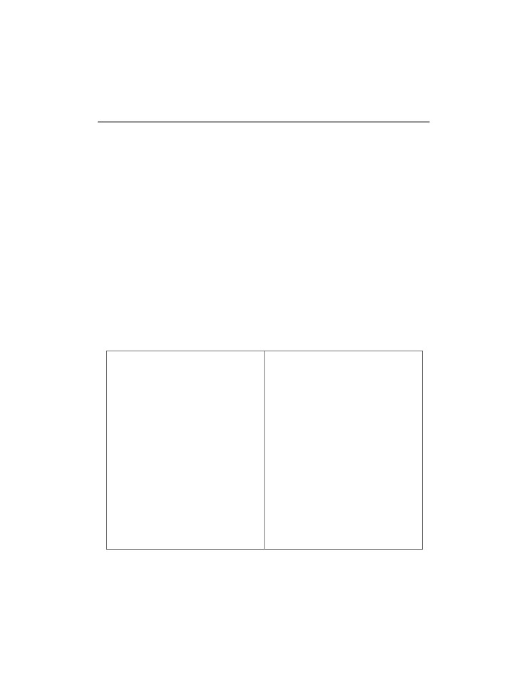
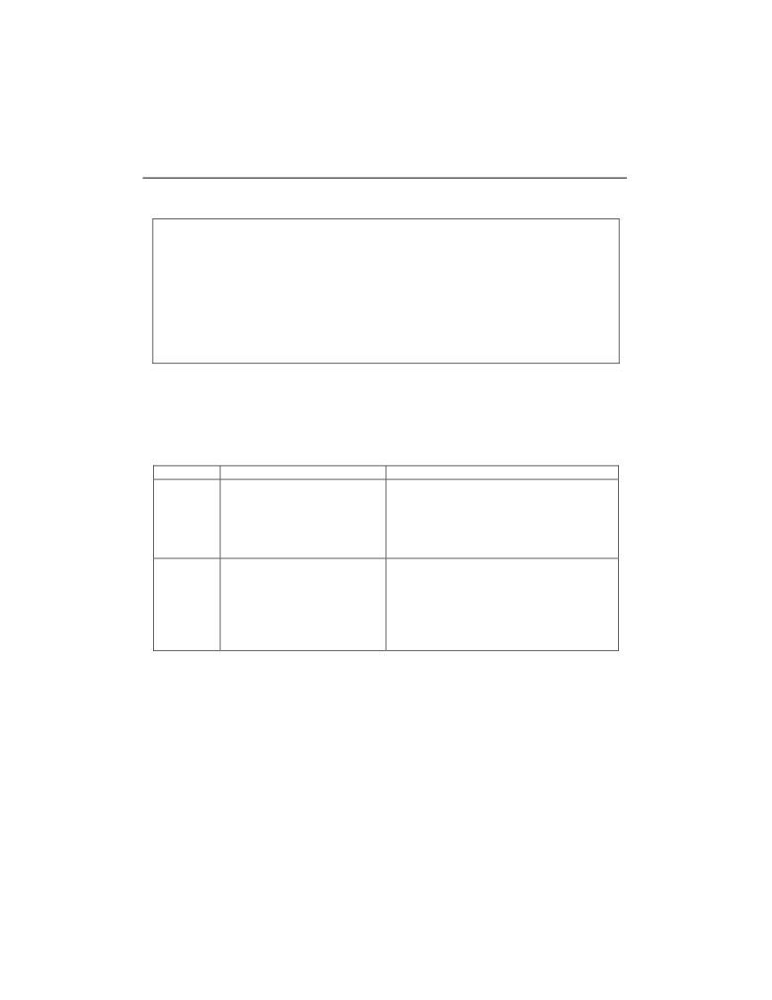

Poliščuk E. Jaroslav: Projektovanje informacionih sistema
67
4. Analiza sistema
4.1. Uvod u analizu sistema
Analiza sistema
(sistemska analiza) je raščlanjivanje sistema na njegove
komponente da bi se proučilo kako te komponente rade i međusobno komuniciraju.
Analiza sistema se provodi sa namjerom slijedeće sinteze sistema i razvoja aplikacija.
Sinteza sistema je ponovno objedinjavanje komponenti u cjeloviti, poželjno poboljšani,
sistem. Biće navedene moguće definicije analize sistema. Analiza sistema je: (1)
razmatranje i planiranje sistema i projekta,
(2) proučavanje i analiza postojećeg
poslovnog i informacionog sistema, te (3) definisanje poslovnih zahtjeva i prioriteta
novog ili poboljšanog postojećeg sistema [Whitten et. al, 2000].
Svrha, cilj i dubina analize sistema mogu se predstaviti slijedećim aktivnostima:
• Automatizacijom poslovnih procesa (Business Process Automation (BPA)),
odnosno povećanjem efikasnosti korisnika analizom problema i uklanjanjem
uzroka;
• Poboljšanjem poslovnih procesa (Business Process Improvement (BPI)), tj.
povećanjem efikasnosti i djelotvornosti, analizom trajanja i koštanja poslovnih
procesa, te predlaganjem poboljšanja
(udruživanje procesa, paralelizam
izvedbe);
• Reinženjeringom poslovnih procesa (Business Process Reengineering (BPR))
ili preoblikovanjem poslovnih procesa (Business Process Redesign (BPR)), šta
predstavlja radikalni redizajn poslovnih procesa analizom mogućih posljedica,
procjenom alternativnih tehnologija, ukidanjem ili zamjenom pojedinih
aktivnosti, analizom troškova - koristi i analizom rizika.
4.2. Aktivnosti analize
4.2.1. Uvod u aktivnosti analize
Aktivnosti analize se mogu sistematizovati u tri nivoa, gdje svaki nivo traži
odgovor na odgovarajuća pitanja.
68
Poliščuk E. Jaroslav: Projektovanje informacionih sistema
1. Detaljna analiza postojećeg sistema, te utvrđivanje potreba i zahtjeva: Kako
radi postojeći sistem?, Na koji način korisnici koriste sistem da bi obavili svoj
posao?, Koji su problemi pri korištenju aplikacija?
2. Detaljna specifikacija zahtjeva za IS: Koji su podaci potrebni?, Ko ih treba?,
Kada?, Od koga?, Ko ih stvara?, Koji su izlazni podaci?, Kakav im je oblik?,
Koji su izvori izlaznih podataka?, Na koji način se podaci prikupljaju i
objedinjuju?
3. Daljnja razrada granica projekta.
Primjeri: ProtokDokumenata, RazmjenaPodataka.
Pozadinska analiza treba da pomogne razumjevanju strukture organizacije, ko u
njoj radi, ko je kome potčinjen, kako sarađuju različiti odjeli, itd. Za potrebe pozadinske
analize može se izraditi shema organizacione strukture iz koje će biti vidljivo koja
osoba ili grupa ljudi obavlja koji dio posla (modeliranje funkcija). Za ostale elemente,
takođe, se rade odgovarajući modeli (modeliranje procesa, modeliranje podataka).
4.2.2. Postupci i tehnike analize
Moderna strukturirana analiza je procesno usmjerena tehnika modeliranja
poslovnih zahtjeva za sistem.
Informaciono inženjerstvo je procesno osjetljiva tehnika, usmjerena podacima i
proučavanju poslovnog sistema ili njegovih većih dijelova kao cjeline, a ne projekat po
projekat.
Brzi razvoj aplikacija
(Rapid Application Development
(RAD)) je razvoj
djelomičnih verzija aplikacija, koje mogu evoluirati do konačnog rješenja.
Združeni razvoj aplikacija (Joint Application Development (JAD)) je analiza
zasnovana na intenzivnim radnim sjednicama na kojima vlasnici, korisnici, analitičari,
dizajneri i projektanti zajednički definišu i oblikuju sistem.
Objektno usmjerena analiza omogućava: modeliranje učaurivanjem podataka i
procesa u objekte, proučavanje postojećih objekata da bi se vidjelo mogu li se
ponovno iskoristiti ili prilagoditi za nove primjene, kao i definisanje novih ili
modifikovanih objekata koji će skupa sa postojećim objektima graditi novu aplikaciju.
Navedeni postupci se mogu komplementarno primjenjivati i pored uvriježenog
mišljenja da je riječ o međusobno isključivim metodama!
Poliščuk E. Jaroslav: Projektovanje informacionih sistema
69
4.2.3. Strukturirana analiza
Moderna strukturirana analiza i Logički dizajn su česti sinonimi koji su u upotrebi.
Strukturirana analiza omogućava provođenje strukturiranog procesa i dobijanje
rezultatata analize. Sačinjavaju je:
• Tehnika modeliranja poslovnih zahtjeva za sistem, koja je usmjerena
procesima, ali se razvila tako da obuhvata i podatke. Omogućava strukturiranje
procesa, ulaza, izlaza i skladišta podataka potrebnih da bi se odgovorilo na
poslovne događaje;
• Logički modeli kojima se prikazuje ŠTA je sistem i ŠTA mora raditi (a ne KAKO
radi). Koriste se dijagrami toka podataka za logički prikaz poslovnih zahtjeva,
nezavisno od tehničkih rješenja, šta predstavlja logički dizajn. Ti modeli
izražavaju suštinu sistema
(sinonimi: esencijalni, konceptualni ili poslovni
modeli);
• Uključivanje određivanja prioriteta zahtjeva.
Analiza sa ciljem automatizacije poslovnih procesa omogućava razumijevanje
postojećeg sistema, ekstenzivno prikupljanje informacija i zahtjeva, kao i oblikovanje
procesa i podataka. Osim toga, omogućava uočavanje mogućih poboljšanja (ako nije
učinjeno ranije), analizu problema, odnosno identifikovanje problema, ustanovljavanje
željenih poboljšanja, kao i analizu i traženje uzroka problema i prioritete njihovog
rješavanja. Razvoj koncepata budućeg sistema obuhvata prikupljanje dodatnih
informacija, reviziju i doradu modela.
4.3. Definisanje zahtjeva koje sistem mora posjedovati
4.3.1. Uvod u definisanje zahtjeva
IEEE (Institute of Electrical and Electronics Engineers) standard definiše zahtjeve
koje mora posjedovati sistem kao: (1) uslov ili sposobnost koje korisnik treba da ima da
bi riješio problem ili ostvario cilj, (2) uslov ili sposobnost koju mora posjedovati sistem
ili komponenta sistema da bi zadovoljila ugovor, standard, specifikacije ili neki drugi
ugovoreni document,
(3) dokumentovanu reprezentaciju uslova ili mogućnosti
definisanih pod (1) ili (2); [IEEE Std 830-1998, IEEE Std 610.12-1990].
Zahtjevi ne sadrže detalje dizajna, detalje implementacije ili informacije vezane uz
planiranje projekta. Pažnja se usmjerava na ono ŠTA se želi izgraditi, a ne ulazi se u
detalje kako i kada to napraviti.
70
Poliščuk E. Jaroslav: Projektovanje informacionih sistema
Za 40 do 60% grešaka u projektu uzrok leži u greškama napravljenim u fazi
postavljanja zahtjeva. Tipična posljedica su "prazna očekivanja", razlika između onog
što očekuje naručilac i onoga šta je izvršilac mislio da treba napraviti. Naknadne
prepravke mogu predstavljati do 40% troškova razvoja, od čega je 70 do 85% pripisivo
pogrešnim zahtjevima. Nepotpuno definisani zahtjevi čine nemogućim planiranje
projekta i praćenje promjena [Leffingwell, 1997].
4.3.2. Vrste zahtjeva
Zahtjevi mogu biti: poslovni zahtjevi (zašto), korisnički zahtjevi (zahtjevi krajnjih
korisnika), funkcionalni zahtjevi (šta) ili nefunkcionalni zahtjevi (kako ili kako dobro).
Poslovni zahtjevi definišu ciljeve organizacije
(korisnički zahtjevi na višem
nivou), odnosno daju opis problema koje treba riješiti
(npr. poslovna potreba
"Poboljšanje usluge postojećim klijentima i pridobijanje novih") ili sadržani u
dokumentima u kojima se opisuje vizija i opseg projekta
(npr. poslovni zahtjev
"Omogućiti Internet prodaju").
Korisnički zahtjevi (zahtjevi krajnjih korisnika) opisuju zadatke koje korisnik mora
moći obaviti služeći se aplikacijama ili koji su sadržani u opisima slučajeva korištenja,
tj. opisima scenarija rada.
Funkcionalni zahtjevi
(šta) definišu softversku funkcionalnost
(očekivano
ponašanje i operacije koje sistem može izvoditi), koju treba ugraditi u proizvod da bi
omogućio korisnicima obavljanje njihovih zadataka. U ovu grupu zahtjeva spadaju
posebno zanimljive mogućnosti programa, odnosno skup logički povezanih
funkcionalnih zahtjeva koje korisniku omogućavaju ispunjavanje poslovnih zahtjeva.
Nefunkcionalni zahtjevi (kako ili kako dobro) su standardi, pravila i ugovori koje
proizvod mora zadovoljiti, opisi vanjskih interfejsa, zahtjevi za performansama,
ograničenja za dizajn i implementaciju, te osobine kvaliteta koje preciziraju opis
proizvoda navodeći karakteristike proizvoda u različitim dimenzijama, a bitne su ili
korisniku ili projektantu.
Potrebno je još naglasiti da je potrebno odrediti prioritetete pojedinih zahtjeva.
Primjer 1: Zahtjevi vlasnika sistema za studentsku subvencioniranu prehranu
[Fertalj & Kalpić, 2005].
Očekivana novčana ušteda: Sistem mora biti tako koncipiran da prava na
subvencioniranu prehranu može koristiti samo student koji ih je stekao i da ih može
koristiti samo u svrhu prehrane. Sistem mora onemogućiti: korištenje subvencije od
strane osoba koje nemaju na to pravo, zaradu ilegalnih posrednika, korištenje
subvencije za druge svrhe osim prehrane, naplatu usluga koje nisu pružene.
Poliščuk E. Jaroslav: Projektovanje informacionih sistema
71
U idealnom slučaju zahtjevi vlasnika podudaraju se sa poslovnim ciljevima!
Primjer 2: Zahtjevi krajnjih korisnika.
Prehrana kod bilo kojeg izvršioca usluga: Novi sistem mora omogućiti da student
ostvaruje svoje pravo kod bilo kojeg izvršioca usluge subvencionirane prehrane.
Dosadašnja praksa je bila da svaki izvršilac usluga izdaje svoje bonove koji se mogu
koristiti samo u određenim restoranima. Ukinuti plaćanje unaprijed: Treba izbjeći bilo
kakvo plaćanje od strane studenata za potrebe ostvarivanja prava, a naročito
unaprijed. Ukloniti nepotrebne postupke za ostvarivanje prava: Sistem mora biti tako
koncipiran da kad se studentu jednom zavedu prava na matičnoj ustanovi nisu
potrebna nikakva daljnja dokazivanja za ostvarivanje prava kod izvršioca usluga.
Smanjiti rizik gubitka ostvarenih prava: Sistem mora onemogućiti zloupotrebu stečenih
prava. Lakše ostvarivanje ostalih prava iz studentskog standarda, npr. javni prijevoz po
povlaštenoj cijeni, pozorišta, kina, smještaj u studentskim domovima, student - servis,
itd.
Primjer 3: Nepotpuni zahtjev.
Zahtjev "Softverski proizvod će ispisati statusnu poruku u redovnim intervalima,
ne manjim od 60 sekundi" nameće slijedeća pitanja: Šta je statusna poruka i pod kojim
uslovima će biti ispisana?, Koliko dugo ostaje vidljiva?, Koji dio proizvoda će ispisati
poruku?, Koliko doslijedni intervali moraju biti?
Zahtjev definisan preciznije i detaljnije: Modul za nadzor će ispisivati statusnu
poruku u za to određeni dio interfejsa. Poruka će se ažurirati svakih 60 s (±10 s) nakon
što započne izvođenje pozadinskog zadatka i biće vidljiva cijelo vrijeme. Ukoliko se
pozadinski zadatak izvodi normalno, modul za nadzor će ispisivati postotak obavljenog
posla. Modul za nadzor će ispisati "Zadatak obavljen" nakon što se zadatak obavi.
Modul će ispisati poruku o grešci ukoliko dođe do zastoja u izvođenju. Problem je
rastavljen u više zahtjeva budući da će svaki zahtijevati posebno testiranje. Ukoliko je
više zahtjeva grupisano u jedan lakše je previdjeti neki od njih tokom izrade ili
testiranja.
Primjećuje se da u zahtjevu nije detaljno opisano kako i gdje će se poruka
ispisivati. To će biti odlučeno tokom dizajna.
Primjer 4: Neostvariv zahtjev.
Zahtjev "Softverski proizvod će se trenutno prebaciti između ispisivanja i skrivanja
oznaka koji se ne mogu štampati" je neostvariv zahtjev iz slijedećih razloga: Računari
ništa ne mogu napraviti trenutno! Da li programska podrška sama odlučuje kad će se
prebaciti iz jednog stanja u drugo ili je to inicirano akcijom korisnika? Na koji dio teksta
će se primijeniti promjena prikaza: da li samo označeni tekst, cijeli dokument ili nešto
72
Poliščuk E. Jaroslav: Projektovanje informacionih sistema
treće?. Uočava se i nejednoznačnost: da li su "oznake koje se ne mogu štampati"
skrivene oznake, posebne oznake ili kontrolne oznake?
Bolji zahtjev glasi: "Korisnik će posebno dogovorenom akcijom, odabrati da li će
se HTML (Hyper Text Markup Language) oznake u trenutno otvorenom dokumentu
prikazivati ili ne".
Sad je jasno da je riječ o HTML oznakama, te da korisnik mora moći da obavi
nekakvu akciju, ali nije točno navedeno kakvu (npr. kombinacija tipki), šta se prepušta
dizajnerima.
Primjer 5: Neodređeni zahtjev.
U zahtjevu "Parser će brzo generisati izvještaj o greškama HTML oznaka, koji
omogućava brzu ispravku grešaka kada program koriste početnici u HTML-u" uočavaju
se slijedeće neodređenosti: riječ "brzo" je neodređena, nije definisano šta predstavlja
izvještaj i to čini zahtjev nekompletnim. Postavljaju se i slijedeća pitanja: Kako se
ovjerava zahtjev?, Kako pronaći nekoga ko se smatra početnikom u HTML-u i zatim
vidjeti kako brzo će, uz pomoć izvještaja, ispraviti greške?, Kada se generiše izvještaj?
Bolje rješenje glasi: Nakon što je HTML analizator obradio datoteku, generisaće
izvještaj koji sadrži broj linije i tekst pronađenih HTML grešaka, te opis svake greške.
Ukoliko nema grešaka prilikom analize, neće se generisati izvještaj.
4.3.3. Određivanje zahtjeva
Poslovni zahtjevi: Sve što opisuje finansijski, trgovački ili drugi poslovni prodor
koji korisnici, ili organizacija koja razvija sistem, mogu dobiti je, najvjerovatnije,
poslovni zahtjev.
Slučajevi korištenja ili scenariji: Opšte izjave o korisničkim ciljevima ili
poslovnim zadacima, koje korisnici moraju obavljati, najvjerojatnije su slučajevi
korištenja, dok specifični opisi zadataka predstavljaju korisničke scenarije. Specifične
zadatke treba generalisati u opšte slučajeve korištenja.
Poslovna pravila: Kada korisnik izjavi da neku aktivnost mogu obavljati samo
pojedine osobe ili uloge, pod određenim uslovima, on možda opisuje poslovno pravilo.
Poslovna pravila su operativni principi poslovnih procesa. Ona nisu funkcionalni
zahtjevi.
Funkcionalni zahtjevi: Izjava koja počinje sa „Korisnik mora moći da obavi neku
funkciju”, ili „Sistem treba moći da demonstrira određeno ponašanje” je najvjerovatnije
funkcionalni zahtjev. Funkcionalni zahtjevi opisuju vidljivo ponašanje sistema i definišu
šta će sistem raditi. Treba svima biti jasno zašto sistem „mora” biti u stanju da obavlja
Poliščuk E. Jaroslav: Projektovanje informacionih sistema
73
određene funkcije. Predloženi funkcionalni zahtjevi ponekad predstavljaju zastarjele ili
neefikasne poslovne procese koji ne trebaju biti uključeni u novi sistem.
Atributi kvaliteta: Izjave koje opisuju kako dobro sistem obavlja funkciju su
atributi kvaliteta, tj. jedna vrsta nefunkcionalnih zahtjeva. Zahtjeve koji opisuju poželjne
karakteristike sistema: brzinu, jednostavnost, intuitivnost, robustnost, pouzdanost,
sigurnost i efikasnost treba razmotriti sa korisnicima, da bi se precizno utvrdilo šta oni
misle pod tim dvosmislenim i subjektivnim terminima.
Zahtjevi vanjskih interfejsa: Ova klasa zahtjeva opisuje veze između sistema i
vanjskog svijeta. Specifikacija sistemskih zahtjeva treba da uključuje odlomke za ove
zahtjeve, uključujući i interfejse, te mehanizme komunikacije za korisnike, hardver i
druge softverske sisteme.
Ograničenja su uslovi koji ograničavanju izbor rješenja raspoloživih dizajneru ili
programeru. Spadaju u nefunkcionalne zahtjeve i trebaju biti dokumentovani.
Neopravdana ograničenja treba pokušati odbaciti jer onemogućavaju postizanje
najboljeg rješenja. Takođe, mogu umanjiti primjenu komercijalnog softvera i
komponenti u rješenju. Neka ograničenja mogu pomoći u zadovoljavaju atributa
kvaliteta. Primjer je poboljšanje prenosivosti programa korištenjem samo standardnih
naredbi nekog programskog jezika.
Definicija podataka je bilo koji opis formata, dozvoljenih vrijednosti,
pretpostavljenih vrijednosti ili kompozicija složenih struktura podataka. Sve definicije
treba pohraniti u Rječnik podataka, kao glavni orjentir za učesnike na projektu.
Ideje o rješenju: Ako korisnik opisuje specifičan način interakcije sa sistemom,
kojom bi mogao obaviti neku akciju, npr. „Korisnik odabira podatak koji želi iz padajuće
liste”, on predlaže rješenje, a ne zahtjev. Predloženo rješenje može odvući pažnju od
pravih zahtjeva. Kod postavljanja zahtjeva treba se usmjeriti na ono što je potrebno
obaviti, a ne na način realizacije. Treba istražiti zašto korisnik predlaže određenu
ugradnju, jer to može pomoći u razumijevanju stvarne potrebe i korisnikovih očekivanja
o načinu kako sistem treba da raditi.
4.3.4. Postavljanje prioriteta zahtjeva
Nužno svojstvo sistema nameće pitanje: Da li vlasnik sistema nešto stvarno
mora imati? Postoji tendencija da se previše zahtjeva proglasi nužnim! Po definiciji,
ako sistem ne uključuje nužne zahtjeve, taj sistem ne može ispuniti svoju svrhu. Treba
testirati svaki zahtjev koji se smatra nužnim i probati ga rangirati. Ako se zahtjev može
rangirati onda nije obavezan. Potpuno obavezni zahtjevi se ne mogu rangirati, jer su
nužni za prvu verziju sistema.

74
Poliščuk E. Jaroslav: Projektovanje informacionih sistema
Poželjno svojstvo sistema su funkcije koje korisnik želi na kraju da ima. Ranije
verzije sistema mogu pružiti (ne potpunu) funkcionalnost bez tih zahtjeva. Poželjni
zahtjevi mogu i trebaju biti rangirani.
Neobvezna svojstva sistema su proizvoljni zahtjevi, svojstva i mogućnosti bez
kojih se može, iako bi lijepo bilo ih imati. To nisu pravi zahtjevi. Ovi zahtjevi, takođe,
mogu biti rangirani.
4.3.5. Dokumentovanje analize zahtjeva
Kratke definicije zahtjeva glase: (1) izjava o stanju, ograničenjima i potrebama
sistema, (2) narativni dokument namijenjen korisniku, ili ga piše korisnik, a sačinjavaju
ga poslovni i korisnički zahtjevi, kao i njihovi prioriteti, uočeni problemi, ključne
pretpostavke i preporuke za njihovo rješavanje.
Specifikacija zahtjeva, često nazvana i funkcionalnom specifikacijom, je
strukturirani dokument sa detaljnim opisom očekivanog ponašanja sistema (tabela
4.1). Namijenjen je ugovaračima i izvršiocima razvoja. Predstavlja cjeloviti i nezavisan
pogled na sistem. Sačinjavaju ga funkcionalni i nefunkcionalni zahtjevi te njihovi
Tabela 4.1.
1. Uvod
4. Svojstva sistema
1.1 Namjena
4.x Svojstvo X
1.2 Pregled dokumenata
4.x.1 Opis i prioriteti
1.3 Ko treba čitati dokumente i
4.x.2 Nizovi pobuda/odziv
savjeti za čitanje dokumenata
4.x.3 Funkcionalni zahtjevi
1.4 Opseg proizvoda
5. Ostali nefunkcionalni zahtjevi
1.5 Referense
5.1 Zahtjevi za performansama sistema
2. Sveobuhvatni pregled
5.2 Zahtjevi za sigurnošću korisnika
2.1 Kontekst proizvoda
5.3 Zahtjevi za sigurnošću podataka
2.2 Funkcije proizvoda
5.4 Kvalitet programske podrške
2.3 Kategorije korisnika i svojstva
5.5 Poslovna pravila
2.4 Okruženje u kojem se izvodi
5.6 Korisnička dokumentacija
proizvod
6. Ostali zahtjevi
2.5 Ograničenja dizajna i ugradnje
Dodatak A: Rječnik
2.6 Pretpostavke i zavisnosti
Dodatak B: Modeli i dijagrami
3. Zahtjevi za interfejsom
Dodatak C: Lista nedovršenih/neodređenih
3.1 Korisnički interfejs
zahtjeva
3.2 Hardverski interfejs
3.3 Softverski interfejs
3.4 Komunikacioni interfejs
Poliščuk E. Jaroslav: Projektovanje informacionih sistema
75
prioriteti, model organizacione strukture (strukturirani dijagrami), opis toka dokumenata
(dijagrami toka), model procesa (dijagrami toka podataka), kao i konceptualni model
podataka (dijagrami entiteti - veze).
4.3.6. Uzroci lošeg planiranja zahtjeva
Nedovoljna uključenost korisnika: Bez korisnika se ne može točno znati šta
korisnici žele. Takvi proizvodi su neprihvatljivi.
Čudni korisnički zahtjevi: Neopravdana promjena mišljenja tokom izvedbe
uzrokuje prekoračenje predviđenog roka za realizaciju, kao i degradaciju kvaliteta
proizvoda.
Nejasni (dvosmisleni) zahtjevi: Situacija u kojoj čitalac(i) zahtjeva taj zahtjev
tumači(e) na više načina. To uzrokuje prepravljanje i gubljenje vremena.
Pretjerano ukrašavanje: Želja izvođača da dodaju novu funkcionalnost "koja
treba da se svidi korisnicima" i zahtjev korisnika za dodacima koji dobro izgledaju ali
ne pridonose funkcionalnosti. Izrada takvih dodataka je nepotrebna i predstavlja
gubljenje vremena.
Minimalističke specifikacije: Tendencija postavljanja minimalnih zahtjeva ili
skiciranja koncepata, uz želju da ih izvođači nadopune tokom izvedbe, izaziva
frustracije izvođača i neispunjena očekivanja korisnika.
Zanemarivanje potreba: Zanemarivanje potreba određenih (grupa) korisnika
izaziva stvaranje „opozicije“ projektu.
4.3.7. Svojstva dobro postavljenih zahtjeva
Svojstva dobro postavljenih korisničkih zahtjeva su definisana IEEE standardom
[1998]. Ta svojstva su: potpunost
(cjelovitost), tačnost, ostvarivost
(izvodljivost),
nužnost, poredak po prioritetima, nedvosmislenost i mogućnost provjere.
Dobra specifikacija zahtjeva korisnika mora da sadrži slijedeća svojstva:
potpunost, konzistentnost, mogućnost izmjene i mogućnost praćenja. Cilj je napisati
dovoljno dobre zahtjeve, na osnovu kojih se može pristupiti dizajnu i ugradnji pojedinih
komponenata sistema, uz prihvatljiv stepen rizika.

76
Poliščuk E. Jaroslav: Projektovanje informacionih sistema
Primjer dobro postavljenih korisničkih zahtjeva:
“Hemičar ili član osoblja hemijske laboratorije može podnijeti zahtjev za jednom ili
više hemikalija. Zahtjev može biti udovoljen ili dostavom pakovanja hemikalije koja se
već nalazila na zalihi hemijske laboratorije ili upućivanjem narudžbe za novim
pakovanjem hemikalije od vanjskog dobavljača. Osoba koja upućuje zahtjev mora
imati mogućnost pretraživanja kataloga hemikalija vanjskog dobavljača dok sastavlja
narudžbu. Sistem mora pratiti status svakog zahtjeva za hemikalijama od trenutka kada
je ispunjen do trenutka kada je udovoljen ili otkazan. Takođe, mora pratiti istoriju svakog
pakovanja hemikalija od trenutka kada stigne u kompaniju do trenutka kad je potpuno
upotrebljen ili odbačen.”
Na osnovu izjava korisnika i prikupljene dokumentacije modeliraju se pojedine
komponente sistema (procesi, podaci, događaji). Mogu se definisati preslikavanja
uočenih imenica i glagola u konkretne komponente analitičkog modela. Moguća
preslikavanja su opisana u tabeli 4.2.
Tabela 4.2.
Tip riječi
Primjer
Komponente analitičkog modela
Imenica
- Ljudi, organizacije, softverski
- Skladišta podataka (DFD - modeliranje
sistemi, jedinice podataka ili
toka podataka)
postojeći objekti
- Entiteti ili njihovi atributi (ERD - dijagram
entiteti - veze)
- Klase ili njihovi atributi (dijagram klasa)
Glagol
- Akcije, ono što korisnik
- Procesi (DFD)
može poduzeti ili događaji
- Odnosi (ERD)
koji se mogu dogoditi
- Prelazi (iz stanja u stanje) (STD -
dijagram prelaza stanja)
- Metode klasa (dijagram klasa)